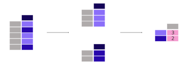

Summary Statistics#
Import Pandas#
# This line imports the pandas library and aliases it as 'pd'.
import pandas as pd
Creating a DataFrame from a CSV file#
The pd.read_csv() function is used to read the data from the file ‘data/titanic.csv’.
# Load the Titanic dataset from a CSV file into a DataFrame named 'titanic'.
titanic = pd.read_csv('data/titanic.csv')
# Display the DataFrame 'titanic'.
titanic
Show code cell output
| PassengerId | Survived | Pclass | Name | Sex | Age | SibSp | Parch | Ticket | Fare | Cabin | Embarked | |
|---|---|---|---|---|---|---|---|---|---|---|---|---|
| 0 | 1 | 0 | 3 | Braund, Mr. Owen Harris | male | 22.0 | 1 | 0 | A/5 21171 | 7.2500 | NaN | S |
| 1 | 2 | 1 | 1 | Cumings, Mrs. John Bradley (Florence Briggs Th... | female | 38.0 | 1 | 0 | PC 17599 | 71.2833 | C85 | C |
| 2 | 3 | 1 | 3 | Heikkinen, Miss. Laina | female | 26.0 | 0 | 0 | STON/O2. 3101282 | 7.9250 | NaN | S |
| 3 | 4 | 1 | 1 | Futrelle, Mrs. Jacques Heath (Lily May Peel) | female | 35.0 | 1 | 0 | 113803 | 53.1000 | C123 | S |
| 4 | 5 | 0 | 3 | Allen, Mr. William Henry | male | 35.0 | 0 | 0 | 373450 | 8.0500 | NaN | S |
| ... | ... | ... | ... | ... | ... | ... | ... | ... | ... | ... | ... | ... |
| 886 | 887 | 0 | 2 | Montvila, Rev. Juozas | male | 27.0 | 0 | 0 | 211536 | 13.0000 | NaN | S |
| 887 | 888 | 1 | 1 | Graham, Miss. Margaret Edith | female | 19.0 | 0 | 0 | 112053 | 30.0000 | B42 | S |
| 888 | 889 | 0 | 3 | Johnston, Miss. Catherine Helen "Carrie" | female | NaN | 1 | 2 | W./C. 6607 | 23.4500 | NaN | S |
| 889 | 890 | 1 | 1 | Behr, Mr. Karl Howell | male | 26.0 | 0 | 0 | 111369 | 30.0000 | C148 | C |
| 890 | 891 | 0 | 3 | Dooley, Mr. Patrick | male | 32.0 | 0 | 0 | 370376 | 7.7500 | NaN | Q |
891 rows × 12 columns
Aggregating statistics#

Pandas offers built-in methods that allow you to quickly generate summary statistics for your data. These methods make it easy to analyse and summarise data with just a few lines of code.
For example, we can use .mean() to find the average age of the Titanic passengers:
titanic["Age"].mean()
Show code cell output
np.float64(29.69911764705882)
Different statistics are available and can be applied to columns with numerical data. Operations in general exclude missing data and operate across rows by default.

What is the median age and ticket fare price of the Titanic passengers?
titanic[["Age", "Fare"]].median()
Show code cell output
Age 28.0000
Fare 14.4542
dtype: float64
The statistic applied to multiple columns of a DataFrame (the selection of two columns returns a DataFrame, see the Subsets tutorial) is calculated for each numeric column.
Multiple aggregating statistics can easily be calculated for one or more columns at the same time. For this we can use the describe() function.
titanic[["Age", "Fare"]].describe()
Show code cell output
| Age | Fare | |
|---|---|---|
| count | 714.000000 | 891.000000 |
| mean | 29.699118 | 32.204208 |
| std | 14.526497 | 49.693429 |
| min | 0.420000 | 0.000000 |
| 25% | 20.125000 | 7.910400 |
| 50% | 28.000000 | 14.454200 |
| 75% | 38.000000 | 31.000000 |
| max | 80.000000 | 512.329200 |
Instead of the predefined statistics, specific combinations of aggregating statistics for given columns can be defined using the DataFrame.agg() method:
titanic.agg(
{
"Age": ["min", "max", "median", "skew"],
"Fare": ["min", "max", "median", "mean"],
}
)
Show code cell output
| Age | Fare | |
|---|---|---|
| min | 0.420000 | 0.000000 |
| max | 80.000000 | 512.329200 |
| median | 28.000000 | 14.454200 |
| skew | 0.389108 | NaN |
| mean | NaN | 32.204208 |
Descriptive statistics
Details about descriptive statistics can be found in the official Pandas documentation on Descriptive statistics.
Aggregating statistics grouped by category#

What is the average age for male versus female Titanic passengers?
titanic[["Sex", "Age"]].groupby("Sex").mean()
Show code cell output
| Age | |
|---|---|
| Sex | |
| female | 27.915709 |
| male | 30.726645 |
As our interest is the average age for each gender, a subselection on these two columns is made first: titanic[["Sex", "Age"]].
Next, the groupby() method is applied on the ‘Sex’ column to make a group per category. The average age for each gender is calculated and returned.
Calculating a given statistic (e.g. mean() age) for each category in a column (e.g. male/female in the ‘Sex’ column) is a common pattern. The groupby() method is used to support this type of operations. This fits in the more general split-apply-combine pattern:
Split the data into groups.
Apply a function to each group independently.
Combine the results into a data structure.
The apply and combine steps are typically done together in Pandas.
In the previous example, we explicitly selected the 2 columns first. If not, the mean() method is applied to each column containing numerical columns by passing numeric_only=True:
titanic.groupby("Sex").mean(numeric_only=True)
Show code cell output
| PassengerId | Survived | Pclass | Age | SibSp | Parch | Fare | |
|---|---|---|---|---|---|---|---|
| Sex | |||||||
| female | 431.028662 | 0.742038 | 2.159236 | 27.915709 | 0.694268 | 0.649682 | 44.479818 |
| male | 454.147314 | 0.188908 | 2.389948 | 30.726645 | 0.429809 | 0.235702 | 25.523893 |
It does not make much sense to get the average value of the ‘Pclass’. If we are only interested in the average age for each gender, the selection of columns (rectangular brackets [] as usual) is supported on the grouped data as well:
titanic.groupby("Sex")["Age"].mean()
Show code cell output
Sex
female 27.915709
male 30.726645
Name: Age, dtype: float64

Categorical data
The Pclass column in the Titanic dataset contains numerical values, but these numbers actually represent three distinct categories: 1st class, 2nd class, and 3rd class. Since these numbers correspond to categories rather than actual quantities, calculating statistics like the mean or sum on them doesn’t make much sense. For instance, averaging these numbers would yield a meaningless result because class rankings are ordinal and not inherently numerical.
Pandas provides a Categorical data type specifically designed to handle such categorical data. This is useful because it enables more efficient storage and manipulation of categorical variables. It also allows you to apply specific operations that make sense for categories, such as ordering or grouping, without misinterpreting the data as continuous numerical values.
To convert the Pclass column from numerical to categorical data in Pandas, you can use the following code:
titanic['Pclass'] = titanic['Pclass'].astype('category')
This will treat Pclass as a categorical variable, allowing Pandas to handle it appropriately for analysis. For example, you can easily perform operations like counting the number of passengers in each class or plotting the distribution of passenger classes, with results that correctly reflect the categorical nature of the data.
More information is provided in the official Pandas documentation on Categorical data.
What is the mean ticket fare price for each of the sex and cabin class combinations?
titanic.groupby(["Sex", "Pclass"])["Fare"].mean()
Show code cell output
Sex Pclass
female 1 106.125798
2 21.970121
3 16.118810
male 1 67.226127
2 19.741782
3 12.661633
Name: Fare, dtype: float64
Grouping can be done by multiple columns at the same time. Provide the column names as a list to the groupby() method.
Groupby operations
A full description on the split-apply-combine approach is provided in the official Pandas documentation on Groupby operations.
Count number of records by category#

What is the number of passengers in each of the cabin classes?
titanic["Pclass"].value_counts()
Show code cell output
Pclass
3 491
1 216
2 184
Name: count, dtype: int64
The value_counts() method counts the number of records for each category in a column.
The function is a shortcut, as it is actually a groupby operation in combination with counting of the number of records within each group:
titanic.groupby("Pclass")["Pclass"].count()
Show code cell output
Pclass
1 216
2 184
3 491
Name: Pclass, dtype: int64
Note
Both size() and count() can be used in combination with groupby(). Whereas size includes NaN values and just provides the number of rows (size of the table), count() excludes the missing values. In the value_counts() method, use the dropna() argument to include or exclude the NaN values.
Key points#
Aggregation statistics can be calculated on entire columns or rows.
groupby()provides the power of the split-apply-combine pattern.value_counts()is a convenient shortcut to count the number of entries in each category of a variable.